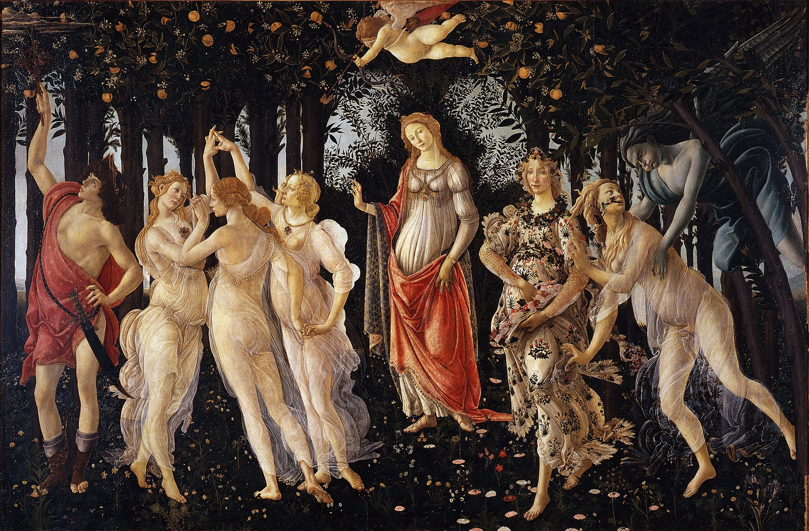

o vestido
O vestido foi feito de raíz pela mãe da noiva. A D.Ana, ou Nita para os amigos.
A inspiração para o vestido veio da tela "Primavera" de Botticelli, em que a ninfa Chloris deusa das flores e sementes (à direita), assustada pela brisa de Zéfiro (o deus do vento), liberta um grito expelindo pela boca flores para as vestes de Flora: a Primavera personificada que leva flores no seu regaço e as vai espalhando.
Enquanto isso, Cupido, de olhos vendados, aponta a flecha a uma das três Graças (Castidade) que olha fixamente para Mercúrio, o guardião e mensageiro dos Deuses.
Vénus, deusa do amor, é a personagem central que abençoa a cena.

os brincos